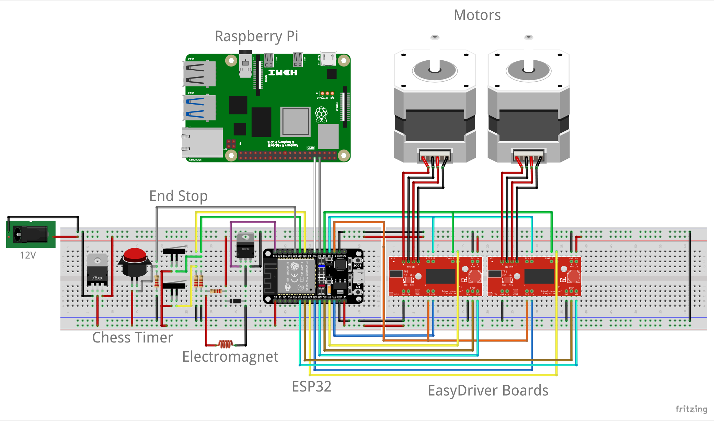

<!DOCTYPE html> 
<html lang="en"></html> 
  <head>
    <link rel="stylesheet" href="css/hardware.css"/>
    <link href='https://fonts.googleapis.com/css?family=Exo' rel='stylesheet'>
    <link href='https://fonts.googleapis.com/css?family=Roboto' rel='stylesheet'>
  </head> 
  <body> 
    <header class = "site-header">
        <div id="site-header-name">Knightr0's Gambit</div>
        <hr>
        <div id= "site-header-subtitle">A UCF AI/UCF IEEE Collaboration</div>
    </header>
    <div class="sidebar">
      <a href="https://www.ucf.edu" onclick="window.open(this.href,'');return false;"></a>
      <a href="index.html">Home</a>
      <a href="https://github.com/ucfai/knightros-gambit" onclick="window.open(this.href,'');return false;">Github</a>
      <a href="hardware.html">Hardware</a>
      <a href="software.html">Software</a>
      <a href="members.html">Members</a>
    </div>
    <div class = "container">
      <div id="intro">Hardware</div>
      <div id="background">Mechanical Design</div>
      <div id="textL">The Chessboard system consists of an x-y Cartesian coordinate system, implemented with 20x40 extrusions.
        To move the extrusions, we use slider assemblies with wheels attached, allowing for minimal friction during movement.
        Using these extrusions, we can move an electromagnet to any point within the physical limits of the extrusions. This
        electromagnet is almost directly in contact with the underside of the chessboard, which allows moving the chess pieces
        from one position to another. We will control the electromagnet's position using two stepper motors, each of which drives
        one of the two axes.</div>
      <div id="textL">Regarding the utilization of the accessible coordinate system, we have segmented the area into a 12x12 grid. 
        This will allow for an 8x8 grid in the center where the game will be played and a border of two spaces surrounding it. 
        The 8x8 grid will be colored using unique colors, which will allow the aforementioned camera to easily distinguish different 
        groups of pixels. This will allow the computer vision to detect player moves easily. The border contains the "graveyard", 
        which is used to store captured pieces and spare pieces for promotions.</div>
      <div id="imgdescription">CAD Mockup of Actuation Assembly (Slider Extrusion)</div>
      
      <div id="textR">Sheets of wood and acrylic will be connected with fasteners to create the physical chessboard. Two chess sets 
        will be used, one as the main set and one to facilitate piece promotion. We will attach a small rare-earth magnet to each chess 
        piece so that it can be moved by an electromagnet that is beneath the surface of the chessboard. Current flow to the electromagnet 
        will be enabled and disabled through a MOSFET. The electromagnet will be connected to a slider that will be 3D printed using the 
        filament, which rides on a 20x40 extrusion using the POM pulley wheels. The 20x40 extrusion will itself ride on two additional 3D 
        printed sliders that are connected to two additional 20x40 extrusions and extrusion fasteners. The position of the sliders will be 
        controlled by the two stepper motors, connected with the timing belt kit. The stepper motors will be controlled using the two 
        Easydriver motor controllers, which take input signals from the ESP-32 microcontroller. The endstop switches are used to find the 
        bounds of the coordinate system, which helps to calibrate the microcontroller. The ESP-32, Raspberry Pi, and motor drivers use 
        heatsinks to ensure that they don't overheat. The ESP-32 controls its outputs based on commands received from the Raspberry Pi. 
        The communication between the Raspberry Pi and ESP-32 is facilitated using wires that are connected through the female headers. 
        The Raspberry Pi determines the required movements using a camera (used to analyze the board with computer vision) and an arcade 
        button (used to indicate the end of a player's turn). This will all be powered using a 12V power supply.</div>
      
      <div id="imgdescription2">CAD Mockup of Exploded View of Mechanism and Board Assembly</div>
      <div id="ele">Electrical Design</div>
      
      <div id="imgdescription3">Chessboard Electrical Schematic v0</div> 
      <div id="text">The Raspberry Pi is responsible for managing the game state, handling updates (e.g. processing and validating new moves), 
        processing images of the board to compute the new board state, and communicating with the web app. The ESP32 communicates directly with 
        the hardware, actuating the motors/slide rails. The red button shown is pressed at the end of the human player's turn to indicate that 
        the board state should be computed and the AI move should be generated. Not pictured in this schematic are the camera (which plugs directly 
        into the Raspberry Pi via USB) and the power hookup for the Raspberry Pi.</div>
    </div>
  </body>
</html>